Installation Steps
Step 1. Install 'Visual Studio Code'
Install 'Visual Studio Code' from Microsoft Store or your browser.
Search for Microsoft Store or open your browser.
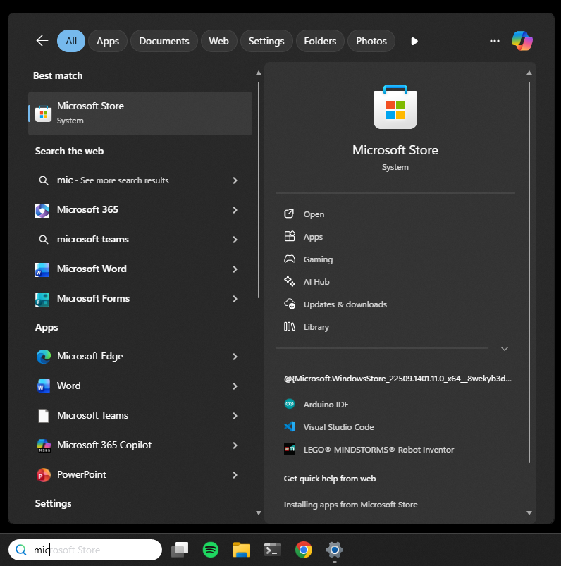Search for Visual Studio Code.
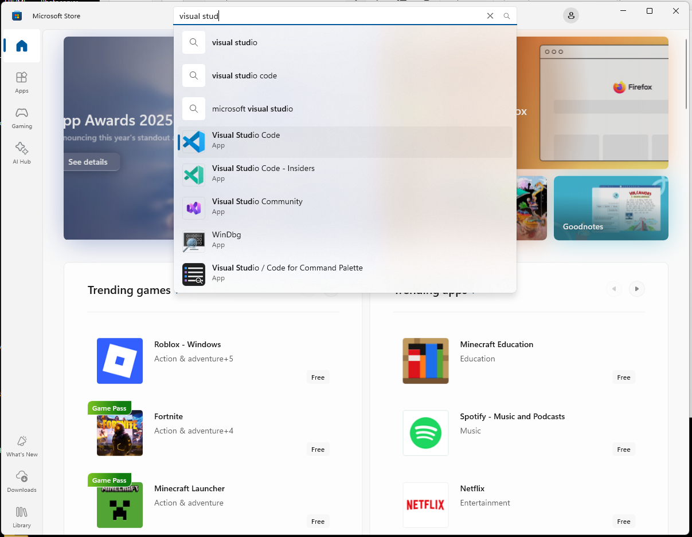Install to your computer and open.
Step 2. Open the prepared project folder on the GTAC USB
On VS Code: Click 'File' > Click 'Open Folder…' > Select "GTAC PL" from USB.
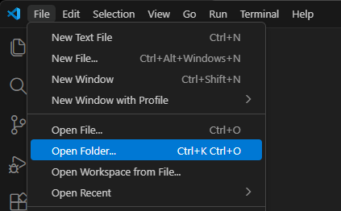 Open Folder dialogue" class="step-image"> 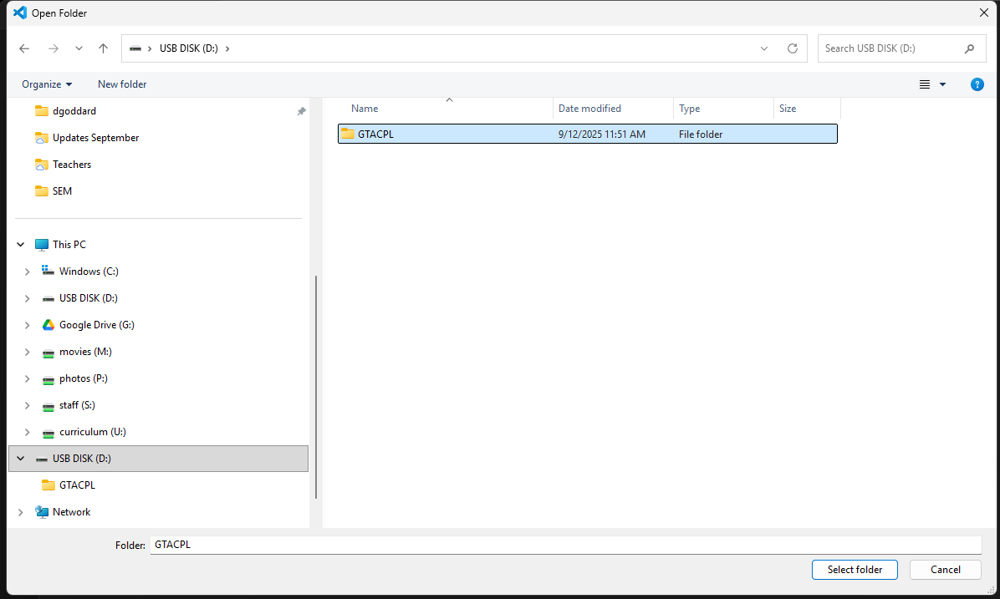Select to trust the author of this folder.
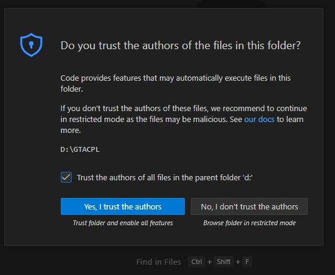Step 3. Select the working file
Select the working file where you will be typing (e.g., `index.html` or a specific project file).
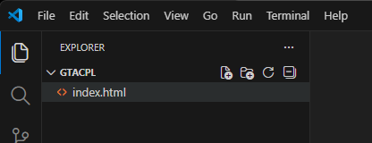Step 4. Add Live Preview Extension
Press Ctrl + Shift + X and type 'live preview' into 'Search Extensions' on the top left search bar and click Install.
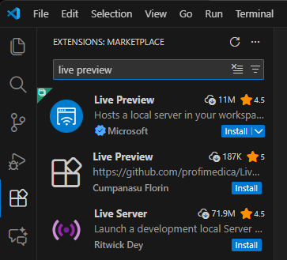Open 'Live Preview' using Ctrl + Shift + P (and search for Live Preview: Show internal preview).
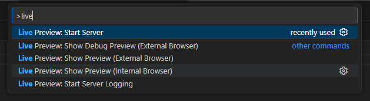Your interface should now look something like shown below.

Step 5. Enable AI Chat (Vibe Code)
Click the chat icon / Press Ctrl+Alt+I.
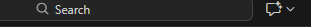Step 6. Log in to GitHub (for AI Access)
You will need to log in to enable AI chats for vibe coding. Type anything into the chat and press enter. If you can't see chat on the right panel, show it in the View pane.
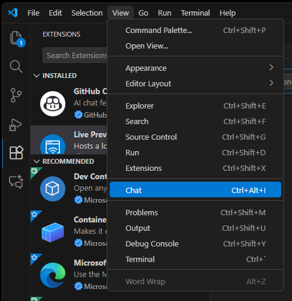Troubleshooting: Initial Sign-up Prompt
Type anything into the chat and it will try to sign you in.
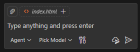This will bring you to the sign in prompt. Select continue with google/github and then login using your Department of Education email.
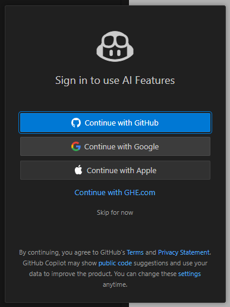NOTE: You can sign in with your personal or school google account, but signing in with the Department email gives you best access to a range of AI models.
Troubleshooting: GitHub Registration
If you run into issues with your sign in, click continue with google then select your Department of Education (or your chosen sign-in) again.
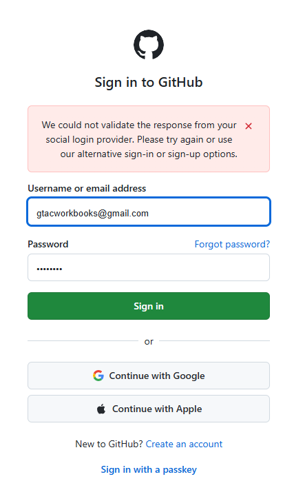 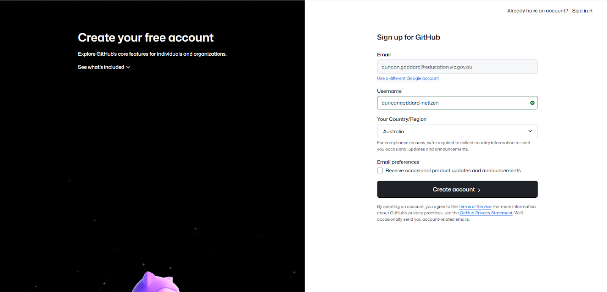You will be brought to a GitHub registration page. You need to register to get access to the AI models. Decide on your username and sign up for GitHub.
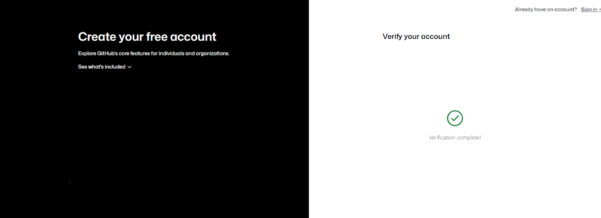Go back to Visual Studio Code. If it hasn't signed in automatically, just cancel sign in and you will be prompted to retry.
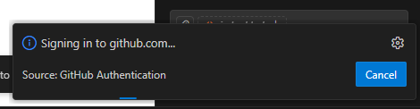Retry. This should open a browser window.
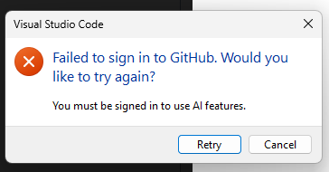Select Continue for your new GitHub login.
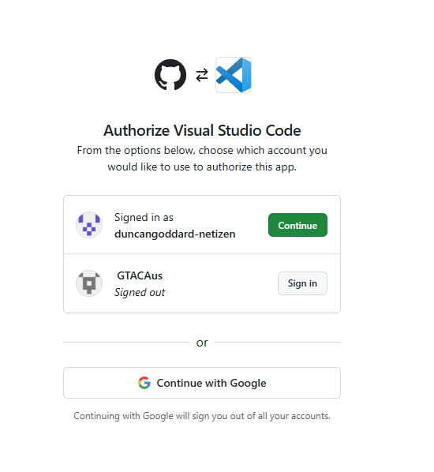Then Authorise.
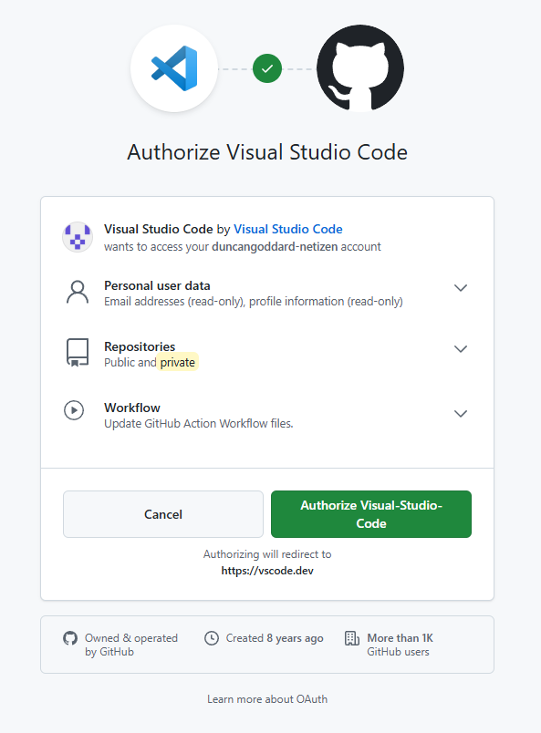 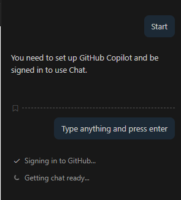It should sign you in!
Final Step: Select AI Model
Press Ctrl+I to open the chat window.
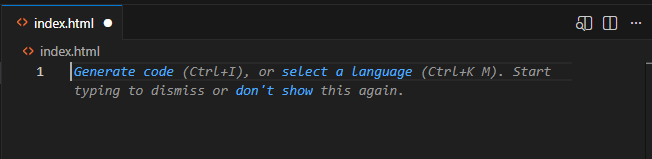Type your prompt here.
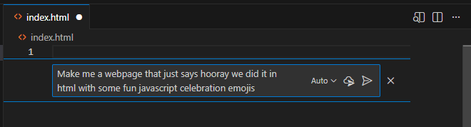Once you enter your prompt, it will prompt you back to select a model. GPT5 mini or Claude Haiki 4.5 will work just fine.
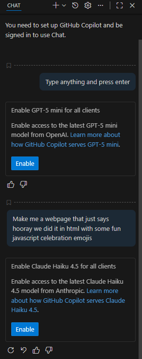Code should start to populate your index.html documents. Your Live Preview window should show the first iteration of your app. Hooray!
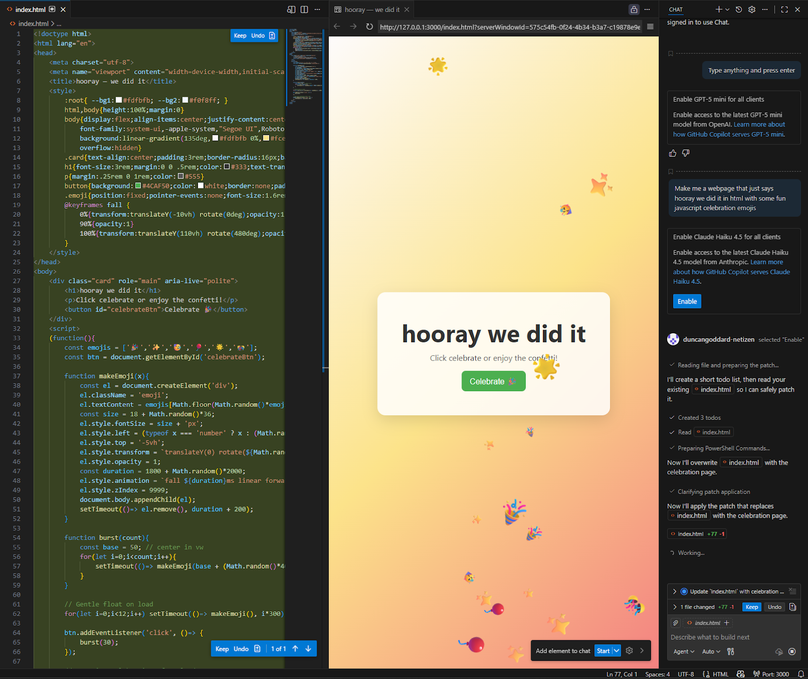